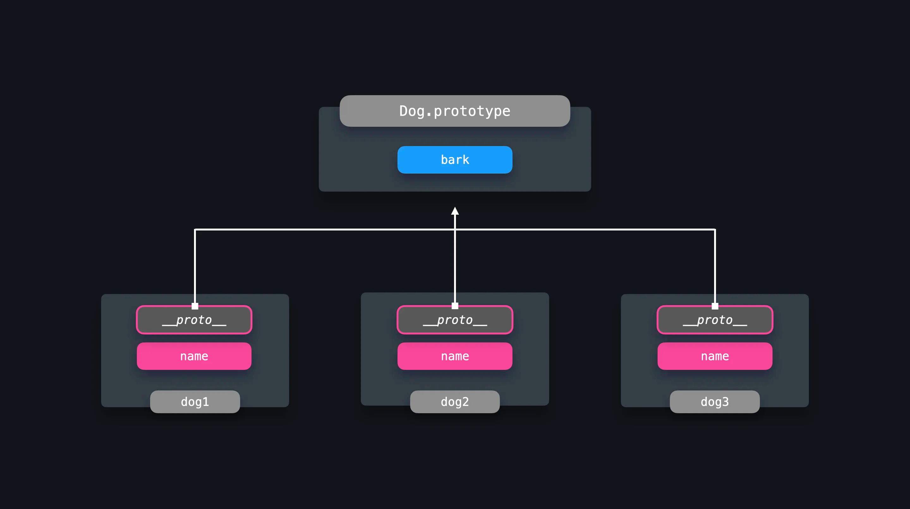

Movie Genres and Design Patterns, a Forbidden Romance
29 Nov 2023
What are design patterns???
Give me a second, I’m googling that for myself.
So, design patterns are a series of methods that developers use to address standard problems that they will run into in their career. Different software engineers may have different methods of addressing the unique problems that they run into, but ultimately it serves as a template of sorts for allowing them and anyone reading their code to have an immediate sort of understanding of how the code was put together, improving readability and comprehension of the code.
One such design pattern includes the prototype pattern. Prototypes are objects that can be accessed by other objects through a prototype chain, which is useful for sharing properties among objects of the same type. Since many objects of the same type are typically created in applications, this is particularly useful for ensuring the same level of functionality expected of the objects, especially in a team-based development setting.

A comparison to genres
However, that’s a boring way of explaining it, so instead, think of it as similar to a movie genre.
When someone thinks of a particular movie genre, they immediately have some understanding of what exactly that movie will contain, what it will be about, and what they can expect. A horror movie (my favorite genre <3) typically brings to mind a slasher running around, targeting young college students, with plenty of jumpscares, gore, and death. A rom-com? A cheesy flick about some bumbling dude falling in love with some lady who’s out of his league, only for them to realize their love in the final moments of the movie after plenty of misadventures, misunderstandings, and curious subplots. Action? A sweaty dude running around gunning people down with plenty of violence and explosions in revenge after losing the love of his life 10 minutes into the movie.
Everyone’s got some understanding of the various tropes that compose these movies from the ones that they have watched throughout their lives, allowing them to vaguely know what they’re getting into when they buy that movie ticket.
In a similar vein, design patterns give software developers a general idea of how someone implemented their code to reach a solution when addressing a particular problem. The tropes that compose those movie genres can be an analogy for the steps/methods used by software engineers, in the form of little bits that compose the whole that allow you to understand the overall implementation. By using the same design patterns, it can be useful to those working on or looking at your code for reference to see exactly what you’re doing almost immediately.
My personal experience
Whether it be in the form of a movie or a coding assignment, having a general understanding of the experience I’m getting into is vital to how I approach it. After all, determining whether I want to watch a particular movie is important if it’s a 2-3 hour long experience that’ll take up a portion of my day, and knowing the general implementation of a specific solution in a coding assignment can prevent an assignment that should take an hour or two from taking about 4 hours.
Thankfully, the professor and TA’s have created a lot of different resources that we can use when it comes to the implementation of the code that we use in our assignments. Once we’ve reached the point where it’s time to be assessed for what we’ve learned in class, the WODs that we’ve done to practice have given us a key understanding of what exactly we need to do.
Similarly, the final project that we’re doing in the form of a website we’re designing is something that we’ve practiced before too. We’ve all done multiple assignments all regarding how to put together a website, and in doing so, all of us immediately can take a look at the code we’ve done, read it, and understand exactly what we’re accomplishing with it.